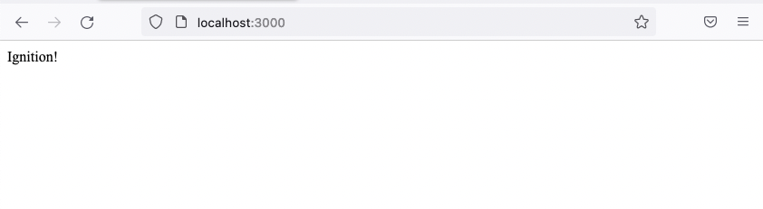
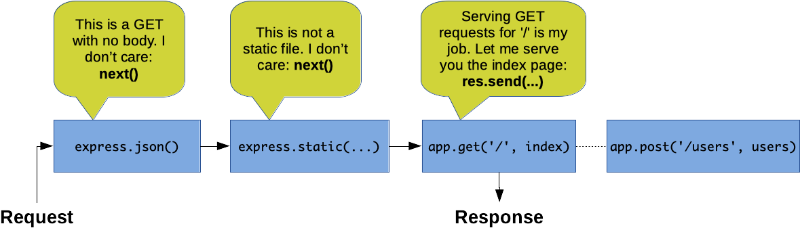
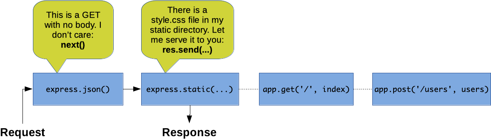
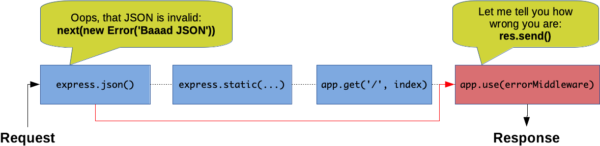

# Express Learn the basics of [Express][express], a fast, unopinionated, minimalistic web framework for [Node.js][node]. **You will need** - [Node.js][node] 26 (22 and 24 also work) - [Google Chrome][chrome] (recommended, any browser with developer tools will do) - [Postman][postman] (recommended, any tool that makes raw HTTP requests will do) **Recommended reading** - [npm](../npm/) - [RESTful APIs](../rest/) --- class: center, middle, image-header ## What is Express? .breadcrumbs[<a href="#1">Express</a>] A fast, unopinionated, **minimalist** web framework for Node.js --- ### Core functionality .breadcrumbs[<a href="#1">Express</a> > <a href="#2">What is Express?</a>] .grid-33[ **Routing** Map HTTP methods and URLs to controllers ] .grid-33[ **Middleware** Intercept and modify HTTP requests and responses ] .grid-33[ **Template engines** Render views with pluggable template engines ] .container[ Express is **minimalist**: it doesn't provide much out of the box. Use the many **middleware** packages at your disposal to build more complex applications. ] --- ### Get the starter application .breadcrumbs[<a href="#1">Express</a> > <a href="#2">What is Express?</a>] You can create an Express app from scratch, but we'll start from a [ready-made application][starter] to save time. [degit][degit] copies it to a new `my-api` directory: ```bash $> npx degit MediaComem/comem-archioweb/subjects/express/starter my-api > cloned MediaComem/comem-archioweb#HEAD to my-api ``` Then install its dependencies: ```bash $> cd my-api $> npm install ``` And run the app ```bash $> npm start > express-api@0.1.0 start > node bin/start.js Listening on http://localhost:3000 ``` --- ### Browse the landing page .breadcrumbs[<a href="#1">Express</a> > <a href="#2">What is Express?</a>] Visit [http://localhost:3000](http://localhost:3000) in your browser and you should see the app running: <p class="center"> <p></p> </p> In the terminal where you're running the app, you should also see that your request was **logged**: ```txt Listening on http://localhost:3000 GET / 200 2.281 ms - 9 ``` --- class: center, middle ## Application structure .breadcrumbs[<a href="#1">Express</a>] What goes where --- ### The server component .breadcrumbs[<a href="#1">Express</a> > <a href="#6">Application structure</a>] Let's take a look at the generated files: ```txt package.json app.js routes index.js users.js bin start.js ``` - `package.json` is used to track **dependencies** with npm - `app.js` is the **main script** that will create and configure the Express app - `routes` contains files that define the app's **routes and controllers** - `bin/start.js` is the **entrypoint** (the script you execute to launch the app) `app.js` only creates the app, and `bin/start.js` makes it listen on a port. Keeping them apart lets **automated tests** import the app without starting a server. --- ### The package.json file .breadcrumbs[<a href="#1">Express</a> > <a href="#6">Application structure</a>] Let's take a look at the generated `package.json`: ```json { "name": "express-api", "version": "0.1.0", "private": true, "type": "module", "scripts": { "dev": "node --watch bin/start.js", "start": "node bin/start.js" }, "dependencies": { "express": "^5.2.1", "http-errors": "^2.0.1", "morgan": "^1.12.1" }, "engines": { "node": "^22 || ^24 || ^26" } } ``` - There is a **start script** configured to launch the app with `npm start` - A few **dependencies** are pre-installed to provide basic web app functionality --- class: center, middle ## Live reload .breadcrumbs[<a href="#1">Express</a>] Restart automatically when you save --- ### Restarting on changes .breadcrumbs[<a href="#1">Express</a> > <a href="#9">Live reload</a>] > Unlike PHP with Apache, Node.js does not re-read your code on every request. > It loads it **once**: editing a file has no effect on the running server > until you restart it. The `dev` script in `package.json` runs Node.js with the [`--watch`][node-watch] option, which restarts the server for you when you save a file: ```bash $> npm run dev > express-api@0.1.0 dev > node --watch bin/start.js Listening on http://localhost:3000 Change detected in '/path/to/my-api/routes/index.js' Restarting 'bin/start.js' Listening on http://localhost:3000 ``` It watches `bin/start.js` and **every file it imports**. Files your code only reads (JSON data, YAML, etc.) are not watched. > Many tutorials use the `nodemon` package for this. `--watch` replaces it. --- class: center, middle ## Express middleware .breadcrumbs[<a href="#1">Express</a>] Handling requests and responses --- ### What is middleware? .breadcrumbs[<a href="#1">Express</a> > <a href="#11">Express middleware</a>] Middlewares are functions that are called **during the application's request-response cycle**. They can: - Execute any code - Make changes to the request and the response objects - End the request-response cycle - Call the next middleware in the chain --- ### Middleware function signature .breadcrumbs[<a href="#1">Express</a> > <a href="#11">Express middleware</a>] This is an example of a middleware function: ```js function myMiddleware(req, res, next) { console.log('Hello World!'); next(); } ``` Whenever a request is made to the Express application, it will receive: - The current **request** object (HTTP method, path, headers, etc) - The **response** object (can be used to configure and send the response) - A `next()` function that **calls the next middleware** So, middlewares form a **chain** and are executed **in order, one by one**. --- ### Plug in middleware functions .breadcrumbs[<a href="#1">Express</a> > <a href="#11">Express middleware</a>] Open `app.js`: ```js const app = express(); app.use(logger('dev')); app.use(express.json()); app.use('/', indexRouter); app.use('/users', usersRouter); ``` Middleware functions are **plugged into your application** by passing them to `app.use()`. As you can see, several middlewares are already plugged in. --- ### Add your own .breadcrumbs[<a href="#1">Express</a> > <a href="#11">Express middleware</a>] Add your new middleware function just below the creation of the Express application: ```js const app = express(); app.use(function myMiddleware(req, res, next) { console.log('Hello World!'); next(); }); ``` Save the file and reload the page in your browser. You should see your middleware working: ```bash Listening on http://localhost:3000 Hello World! GET / 200 4.898 ms - 9 ``` --- ### Limiting middleware by HTTP method or URL path .breadcrumbs[<a href="#1">Express</a> > <a href="#11">Express middleware</a>] You can use a middleware only for HTTP requests on a specific path: ```js app.use('/hello', function hello(req, res, next) { res.send('world'); }); ``` Express also provides `.get`, `.post`, `.put`, etc to apply a middleware only for requests made with that HTTP method: ```js app.post('/ping', function ping(req, res, next) { res.send('pong'); }); ``` As you can see, you can use `res.send()` to send a response to the client. ??? `app.use('/hello')` matches **every method** and every path **starting with** `/hello` (e.g. `/hello/world`), whereas `app.get('/hello')` only matches `GET /hello`. --- ### Controlling the middleware chain .breadcrumbs[<a href="#1">Express</a> > <a href="#11">Express middleware</a>] Remove the call to `next()` in your first middleware function: ```js app.use(function myMiddleware(req, res, next) { console.log('Hello World!'); }); ``` Again, save the file and reload the page in your browser. The page is not loading... Why? --- #### Sending a response .breadcrumbs[<a href="#1">Express</a> > <a href="#11">Express middleware</a> > <a href="#17">Controlling the middleware chain</a>] By not calling `next()`, you have **interrupted the middleware chain**: the next middleware functions are not being executed, so no response is being sent to the client. Update your middleware again, this time to send a response to the client: ```js app.use(function myMiddleware(req, res, next) { console.log('Hello World!'); res.send('Hello World!'); }); ``` If you save the file and reload the page in your browser, you will see that it works again. But you're still not calling next, so all you see is the Hello World response. **Other** middleware functions are **still not executed**. --- #### Calling next again .breadcrumbs[<a href="#1">Express</a> > <a href="#11">Express middleware</a> > <a href="#17">Controlling the middleware chain</a>] Put the call to `next()` back in: ```js app.use(function myMiddleware(req, res, next) { console.log('Hello World!'); res.send('Hello World!'); next(); }); ``` Now there's an error... Why? ```bash Listening on http://localhost:3000 Hello World! GET / 200 - ms - 12 Error [ERR_HTTP_HEADERS_SENT]: Cannot set headers after they are sent to the client at ServerResponse.setHeader (node:_http_outgoing:684:11) at ServerResponse.header (.../express/lib/response.js:686:10) at ServerResponse.send (.../express/lib/response.js:163:12) ... ``` --- #### Only one response can be sent .breadcrumbs[<a href="#1">Express</a> > <a href="#11">Express middleware</a> > <a href="#17">Controlling the middleware chain</a>] This is what happens: - Your middleware function sends the Hello World response - Another middleware a few lines below (`app.use('/', indexRouter);`) tries to send the index page HTTP is a request-response protocol: **one request** will get **one response**. Your code is trying to send _two responses for the same request_. Remember that each middleware function can either: - Modify the request/response and pass them along to the **next middleware** in the chain - **OR send the response** to the client and interrupt the chain This is an application of the [chain of responsibility][design-pattern-cor] design pattern. Each middleware decides whether to handle the request and stop the chain, or pass it along. --- #### Serving the index page .breadcrumbs[<a href="#1">Express</a> > <a href="#11">Express middleware</a> > <a href="#17">Controlling the middleware chain</a>] Let's look at a few examples: ```http GET / HTTP/1.1 Host: localhost:3000 ``` <p></p> --- #### Serving static files .breadcrumbs[<a href="#1">Express</a> > <a href="#11">Express middleware</a> > <a href="#17">Controlling the middleware chain</a>] ```http GET /stylesheets/style.css HTTP/1.1 Host: localhost:3000 ``` <p></p> > Note that the starter application does not serve static files, but many > applications plug in the [`express.static()`][express-static] middleware to do > so. --- #### Creating a user with a JSON payload .breadcrumbs[<a href="#1">Express</a> > <a href="#11">Express middleware</a> > <a href="#17">Controlling the middleware chain</a>] ```http POST /users HTTP/1.1 Content-Type: application/json Host: localhost:3000 { "name": "jdoe", "email": "john.doe@example.com" } ``` <img src="images/middleware-chain-3.png" width="100%" /> --- ### Asynchronous middleware .breadcrumbs[<a href="#1">Express</a> > <a href="#11">Express middleware</a>] You don't have to call `next()` right away. You can do it after some asynchronous calls: ```js import fs from 'node:fs/promises'; app.use(`async function`(req, res, next) { req.myData = `await fs.readFile`('data.txt', 'utf-8'); `next();` }); ``` The middleware chain will not proceed until you call `next()`. --- ### Attaching data to the request .breadcrumbs[<a href="#1">Express</a> > <a href="#11">Express middleware</a>] A middleware can load something and **attach it to `req`** for the next ones. A route can also have **its own chain** of middlewares: ```js async function loadUser(req, res, next) { const base = 'https://jsonplaceholder.typicode.com'; const response = await fetch(\`${base}/users/${req.params.id}`); * req.user = await response.json(); next(); } app.get('/users/:id', `loadUser`, function (req, res) { res.send(\`Hello ${req.user.name}`); // "Hello Leanne Graham" }); ``` `loadUser` only runs for `GET /users/:id`. Many middlewares use this pattern: `express.json()` is what gives you `req.body`. --- ### How to deal with errors in middlewares .breadcrumbs[<a href="#1">Express</a> > <a href="#11">Express middleware</a>] Sometimes things go wrong: - The user sends invalid data - A database query fails (invalid query, connection issue, etc) Since Express 5, if you are using `async/await`, rejected promises will automatically be given to Express (just remember to `await` them): ```js app.use(async function (req, res, next) { req.myData = await fs.readFile('data.txt', 'utf-8'); next(); }); ``` --- #### Error-handling middleware .breadcrumbs[<a href="#1">Express</a> > <a href="#11">Express middleware</a> > <a href="#26">How to deal with errors in middlewares</a>] When you pass an error to `next()`, the following "normal" middleware functions are **not called**. Only special **error-handling middleware functions** are called. Compared to normal middleware functions, an error-handling middleware takes a fourth argument (the error): ```js app.use(function (err, req, res, next) { res.send('Your request failed because: ' + err.message); }); ``` Simply declaring the function with these 4 arguments tells Express that this is an error-handling middleware function and not a normal one. Keep all 4 even if you never call `next`: with only 3, it becomes a normal middleware. --- #### Error-handling example .breadcrumbs[<a href="#1">Express</a> > <a href="#11">Express middleware</a> > <a href="#26">How to deal with errors in middlewares</a>] As you can see in this example, when an error occurs in the first middleware, other normal middlewares are **bypassed** until an **error-handling middleware** is found. ```http POST /users HTTP/1.1 Content-Type: application/json Host: localhost:3000 { "name": "bourne, JSON BOURNE IS DEAD } ``` <p></p> --- #### Error-handling middleware in the starter application .breadcrumbs[<a href="#1">Express</a> > <a href="#11">Express middleware</a> > <a href="#26">How to deal with errors in middlewares</a>] Take a look at the end of `app.js`: ```js // Catch 404 and forward to the error handler app.use(function (req, res, next) { next(createError(404)); }); // Error handler app.use(function (err, req, res, next) { res.status(err.status ?? 500); res.send({ message: err.message }); }); ``` A request that no route has answered reaches the first middleware, which creates a `404` error. The error handler then sends any error back as JSON, with the error's status code (or `500`). --- class: center, middle ## The request object .breadcrumbs[<a href="#1">Express</a>] Using the `req` object --- ### Request example .breadcrumbs[<a href="#1">Express</a> > <a href="#30">The request object</a>] How can we extract all the data from this request? ```http POST /test/a/b?page=3&select=foo&select=bar HTTP/1.1 Content-Type: application/json Host: localhost:3000 Authorization: Basic Zm9vOmJhcg== { "age": "24", "name": { "first": "John", "last": "Doe" } } ``` --- ### Reading the request .breadcrumbs[<a href="#1">Express</a> > <a href="#30">The request object</a>] ```js app.post('/test/:param1/:param2', function (req, res) { req.method; // 'POST' req.path; // '/test/a/b' req.params; // { param1: 'a', param2: 'b' } req.query; // { page: '3', select: ['foo', 'bar'] } req.headers; // { 'content-type': 'application/json', … } req.get('Content-Type'); // 'application/json' (any case) req.body; // { age: '24', name: { … } } res.sendStatus(204); }); ``` - Query and path parameters are **always strings** - `req.headers` has **lower-case** names, `req.get()` accepts any case - `req.body` is `undefined` unless a body parser such as `express.json()` ran first --- class: center, middle ## The response object .breadcrumbs[<a href="#1">Express</a>] Using the `res` object --- ### Sending the response .breadcrumbs[<a href="#1">Express</a> > <a href="#33">The response object</a>] Use `res.send()` for most use cases. It determines the type of content you are sending and sets the appropriate `Content-Type` header: | You send | `Content-Type` | | :------------------------------ | :------------------------- | | `res.send('Some text')` | `text/html` | | `res.send({ some: 'object' })` | `application/json` | | `res.send(Buffer.from('0101'))` | `application/octet-stream` | Objects and arrays are serialized to JSON for you. --- ### Status code and headers .breadcrumbs[<a href="#1">Express</a> > <a href="#33">The response object</a>] .grid-50[ <!-- prettier-ignore-start --> ```js res .status(201) .set('Location', '/books/42') .send(book); ``` <!-- prettier-ignore-end --> ] .grid-50[ ```http HTTP/1.1 201 Created Location: /books/42 Content-Type: application/json { "id": 42, … } ``` ] .container[ .grid-50[ ```js res.sendStatus(204); ``` ] .grid-50[ ```http HTTP/1.1 204 No Content ``` ] ] .container[ Each method returns `res`, so calls can be **chained**. Nothing is sent until `send()`, so earlier middlewares can set headers too. ] --- class: center, middle ## Routing .breadcrumbs[<a href="#1">Express</a>] Mapping HTTP methods and URLs to handler functions --- ### Basic routing .breadcrumbs[<a href="#1">Express</a> > <a href="#36">Routing</a>] As we've seen, basic routing can be applied to middleware by using `.get`, `.post`, etc and passing a path: ```js app.get('/hello', function (req, res) { res.send('World'); }); ``` You can also have dynamic parameters in your URLs: ```js app.get('/authors/`:authorId`/books/`:bookId`', function (req, res, next) { res.send( 'Getting book ' + `req.params.bookId` + ' by ' + `req.params.authorId` ); }); ``` Calling `http://localhost:3000/authors/24/books/33` will respond with: ```txt Getting book 33 by 24 ``` See the [routing guide][routing] for more advanced paths. --- ### Routers .breadcrumbs[<a href="#1">Express</a> > <a href="#36">Routing</a>] An Express [router][router] is an **isolated instance of middleware and routes**. It's basically a **mini-app**. Imagine that you have the following API routes: .grid-50[ ``` GET /authors POST /authors GET /authors/:id PUT /authors/:id DELETE /authors/:id ``` ] .grid-50[ ``` GET /books POST /books GET /books/:id PUT /books/:id DELETE /books/:id ``` ] .container[ You can define a **router** in a separate file for each of the two sets of routes, that way you don't have one monolithic file with all your code in it. ] --- #### Creating a router .breadcrumbs[<a href="#1">Express</a> > <a href="#36">Routing</a> > <a href="#38">Routers</a>] ```js import express from "express"; const booksRouter = express.Router(); booksRouter.`post("/"` /*...*/); booksRouter.`get("/"`, function (req, res, next) { const books = ["Catch-22", "Fahrenheit 451"]; res.send(books); }); booksRouter.`get("/:id"`, function (req, res, next) { const book = { title: "Fahrenheit 451", year: 1953, author: "Ray Bradbury" }; res.send(book); }); booksRouter.`put("/:id"` /*...*/); booksRouter.`delete("/:id"` /*...*/); export default booksRouter; ``` Note that we don't use `/books` and `/books/:id` as paths but `/` and `/:id`. --- #### Plugging in a router .breadcrumbs[<a href="#1">Express</a> > <a href="#36">Routing</a> > <a href="#38">Routers</a>] A router behaves like a middleware function, so you can simply plug it into your application with `app.use()`: ```js // Import the books router from the routes directory import booksRouter from './routes/books.js'; app.use('/books', booksRouter); ``` Any request where the path starts with `/books` will be handled by that router, with that path as a **prefix**: <p class="center"> <img src="images/routers.png" class="w80" /> </p> ??? The path passed to `app.use()` is **prepended to your router's paths**, so your router's `/:id` route becomes `/books/:id` when plugged in like this. It will handle HTTP requests to `/books/42`, for example. --- class: center, middle ## Practice .breadcrumbs[<a href="#1">Express</a>] Time to write your own routes --- ### Express 5 vs. what you'll find online .breadcrumbs[<a href="#1">Express</a> > <a href="#41">Practice</a>] Most tutorials (and AI assistants) still write **Express 4** code. In Express 5: | Express 4 code | What Express 5 does | | :--------------------------------------- | :------------------------------------------------------------------- | | An `async` middleware that throws | The error goes to the error handler (Express 4 hung) | | `req.body` without a body parser | `undefined` (was `{}`) | | `res.send(404)` | Sends `404` as the body with status `200`: use `res.sendStatus(404)` | | `app.get('*', …)`, `app.get('/:id?', …)` | Throws at startup: use `'/*splat'` and `'{/:id}'` | | `?a[b]=1` | `req.query` is `{ 'a[b]': '1' }`, not a nested object | See the [migration guide][migrating-5] for the full list. --- ### Exercise .breadcrumbs[<a href="#1">Express</a> > <a href="#41">Practice</a>] Implement the API described at **[express.archioweb.ch][exercise]** in your `my-api` application, in this order: 1. `GET /hello`: the server you wrote by hand in the Node.js exercise 2. `POST /computations`: read and validate a JSON request body 3. The books: read and write files, and put the routes in a router The page is an [OpenAPI][openapi] document: it describes each route's expected parameters, request body and responses. It's your job to implement them as documented. Test each route with [Postman][postman] as you go. --- ## Resources .breadcrumbs[<a href="#1">Express</a>] - [API reference][api] (documentation for `app`, `req`, `res` and `Router`) - [Routing][routing] - [Using middleware][using-middleware] [api]: https://expressjs.com/en/5x/api/ [chrome]: https://www.google.com/chrome/ [design-pattern-cor]: https://sourcemaking.com/design_patterns/chain_of_responsibility [express]: https://expressjs.com [degit]: https://www.npmjs.com/package/degit [exercise]: https://express.archioweb.ch [express-static]: https://expressjs.com/en/5x/api/express/#expressstatic [using-middleware]: https://expressjs.com/en/guide/using-middleware/ [migrating-5]: https://expressjs.com/en/guide/migrating-5/ [node]: https://nodejs.org/en/ [node-watch]: https://nodejs.org/docs/latest-v26.x/api/cli.html#--watch [router]: https://expressjs.com/en/5x/api/router/ [routing]: https://expressjs.com/en/guide/routing/ [openapi]: https://www.openapis.org [postman]: https://www.postman.com [starter]: https://github.com/MediaComem/comem-archioweb/tree/main/subjects/express/starter